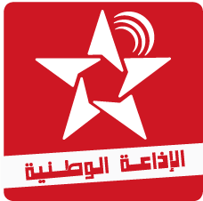
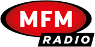
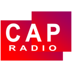
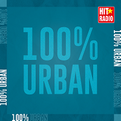
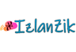

Med Radio
Med Radio Coran
Coran Medina FM
Medina FM - Chada FM
- Rim Radio
 Medi 1 Radio
Medi 1 Radio  Al-Jazeera
Al-Jazeera - Zin B'ladi
 Radio 2M
Radio 2M - Radio Chaine Inter
-  Idaa Al Watania
 Assadissa SNRT
Assadissa SNRT Amazighia SNRT
Amazighia SNRT Meknes snrt
Meknes snrt  Fes snrt
Fes snrt  Tetouan snrt
Tetouan snrt  Tanger snrt
Tanger snrt - Marrakech snrt
 Casablanca snrt
Casablanca snrt - Oujda snrt
 Dakhla snrt
Dakhla snrt  Agadir snrt
Agadir snrt  Hoceima snrt
Hoceima snrt  Monte Carlo
Monte Carlo  Atlantic Radio
Atlantic Radio -  MFM Radio
 Radio Mars
Radio Mars  Aswat
Aswat-  Cap Radio
- Manarat Edu
- Hit Radio
- Hit Radio Mgharba
- Hit Radio Classic
- Hit Radio Tiktok
- Hit Radio Party
-  Hit Radio Urban
- Hit Radio WayWay
 Urban 80's
Urban 80's  Urban Dance
Urban Dance - Urban
 Urban Radio
Urban Radio  Urban PoP
Urban PoP  Urban 90's
Urban 90's  Radio Star
Radio Star  Radio Soleil
Radio Soleil  Radio Only Ray
Radio Only Ray  NRJ Maroc
NRJ Maroc  Radio Sawa
Radio Sawa  Moroccan Voice
Moroccan Voice  Chabab Maroc
Chabab Maroc  Nass Radio
Nass Radio - Plus Casablanca
- Plus Agadir
 Radio Yabiladi
Radio Yabiladi - Achkid FM
-  Izlanzik Radio
 Sawt Ouarzazate
Sawt Ouarzazate  Orient FM
Orient FM  Maroc Music
Maroc Music - TANGER MED
 Radio Atbir
Radio Atbir  Oxygene Radio
Oxygene Radio